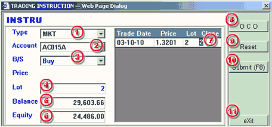

Market Order
When
the Trading Instruction dialogue is activated through the trading panel. Please
complete the following infomation
| 1 | Type - select MKT for placement of market order |
 MKT
Order processing dialog |
| 2 | Account - selection of trading account for the order | |
| 3 | B/S - selection of Buy/Sell for the order | |
| 4 | Lot - enter the contract quantity for the trade | |
| 5 | Balance - margin balance of the selected account | |
| 6 | Equity - margin equity of the selected account | |
| 7 | Close - enter the quantity corresponse to the open order if the trade is for liquidation purpose | |
| 8 | OCO - not applicable | |
| 9 | Reset - button to reset the quantity entered for Close | |
| 10 | Submit(F8) - button to submit the order to the dealing desk | |
| 11 | Exit - button to exit the Trading Instruction dialogue |
Verify
the order before final submission
When a MKT order is successfully placed to the Trading Desk, the order bearing a reference code to signify its acceptance and a status of Unconfirm would be listed in the Working Order panel. The Unconfirm status will stay as long as the order is not "Confirmed" for execution or "Cancelled" on whatever reasons.
Remarks: